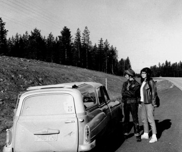
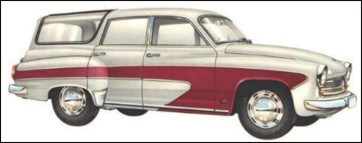
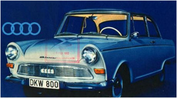

Gamle biler:
Nytte og affeksjonsverdi
Jeg elsker ikke biler. Ikke nå lenger. Ikke bare ut fra naturvernbetraktninger, sjøl om jeg kan se mye riktig i slike argumenter. Men det finnes også gode argumenter for bilisme i Utkant-Norge. Særlig på grunn av de manglende alternativene.
Men det er også noe med moderne biler som ikke tiltaler meg i det hele tatt, annet enn som framkomstmidler. Noe å komme seg fra punkt A til punkt B med. Henting og bringing.
Moderne biler er i mine øyne ikke akkurat stygge, jo forresten, de er kanskje det også. I det minste kjedelige. Produkter av vindtunneller og datamaskiner uten det minste spor av “upraktisk” fantasi.

Jeg kjører en Renault Clio, og den er slik jeg nå vil ha en bil. Uten overdrivelser. Fordi alle overdrivelser på moderne biler ikke bidrar til å gjøre dem mer tiltalende, bare vagt heslige.
Det står en flunkende ny Mercedes utenfor nabohuset, det er meg en stor glede å ikke eie den. Jeg har forresten aldri likt Mercedeser. Av mange grunner. Det er noen jævla overklasse-kapitalistvogner. Det er én god grunn…
Mitt første ordentlige møte med “bil” handlet faktisk om “frihet”. Ikke den store, politiske, revolusjonære. Men friheten i livet til en mann som sto meg nær, min far. Han var bevegelseshemmet etter at han fikk poliomyelitt som fireåring, og gikk med krykker, seinere med stav, og så med krykker igjen.
Midt på femtitallet mens biler enda var ei rasjonert, restriktiv vare i Norge fikk han sin første bil, en “Opel Olympia”, og ble vel en smule “gal i hodet” av det.
Frihet. Til bevegelse, til å reise, til å utforske verden, eller i hvert fall det nære Norge. Stort ikke bare for ham, men for alle i hans nærhet. Tenk vi, en ganske vanlig familie med intekt mye under middels, hadde fått bil?
En gang da politiet stoppet ham fordi de syntes det virket mistenkelig fullt i bilen hans klatret det ut elleve unger, alle naboungene våre fra brakkene på Nordlandet i Kristiansund som hadde mast seg til en biltur. Det hører vel med til historien at han bare ble vinket videre med en hoderisting og et smil bare halvt skjult bak hånden. Temmelig fjernt fra dagens politi?
Det var derfor ikke mer enn naturlig at jeg begynte å kjøre tidlig. Faktisk alt som 16-åring, ikke helt lovlig, men pytt-pytt. Sertifikat tok jeg vinteren 1962 da jeg bodde på Sunndalsøra.

Siden har jeg kjørt. Både som yrkessjåfør og privat. Min aller første bil fikk jeg da min far fikk den vanvittige ide at han skulle forvandle et engasjement som selger for Pfaff Symaskiner i Ålesund (og mitt talent for å reparere symaskiner) til noe “fast”. Han startet butikk på Sunndalsøra, og gav naturligvis meg jobb som reparatør og sjåfør.
Det gikk jo som det måtte gå. To år seinere var det over, og hans ubetalte gjeld til meg iflg. vår avtale ganske stor!
Jeg godtok firmabilen som betaling og ble dermed eier av en ganske spesiell bil, en Wartburg Camping. Den var ikke akkurat pen å se på, men du verden så original. Jeg elsket den bilen, og den var en drøm å kjøre. Totaktsmotor, frihjul, rattgir, takluke, sære saker. Alle setene kunne legges helt ned og den passet utmerket til å raide bygdene omkring Sunndalsøra med… Jeg kan muligens skylde den bilen for at jeg ble så tidlig gift?
Den gikk dessuten som et skudd. Helt sant! Fartskontroll, hva var det? Jeg hadde knapt hørt ordet.
Min far, som den gamle patriark han nå en gang alltid var og ble, solgte den til slutt uten at jeg visste det, for lusne åtte hundre kroner. Han hadde vel bruk for pengene og tok ikke skiftet av eierskap like bokstavelig som meg.

At den var den virkelige drømmebilen min det var den likevel ikke. Det var en adskillig mindre bil som om mulig liknet enda mindre på dagens såpekoppformede framkomstmidler. Det var en DKW junior.
Jeg har som sagt et tvilende og til og med kritisk forhold til biler nå, men dersom jeg skulle få se en DKW junior kjøre forbi nede på veien her, så ville utvilsomt hjertet mitt gjøre et hopp, og jeg ville kanskje ergre meg over det, men slik er det bare.
Man kan beskylde meg for mye rart, men ingen kan si at jeg har levd mitt liv logisk og “voksent” og konsekvent.
Jeg ville nemlig til og med i denne dag ikke ha noe i mot å sette meg bak rattet til en slik bil, og cruise ganske bedagelig gjennom Kristiansunds gater mens radioen spilte Wanda Jackson og Billy Fury og Kathy Young så høyt som en gammel radio kan makte det.
“A thousand stars in the sky, like the stars in your eyes…”
Romantiker? Kyniske meg? Hvor i all verden har dere det fra?